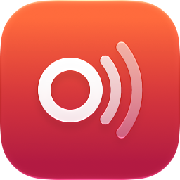

Oiralía
Podcasts sin silencios, en el iPhone, el iPad, el Mac y el Apple Watch.
Contacto
¿Algo no funciona o echas algo de menos? Escríbenos a oscarbernabeu@alzis.es. Si puedes, dinos qué dispositivo y versión del sistema usas.
Preguntas frecuentes
¿Necesito una cuenta?
No. Oiralía guarda tus suscripciones, posiciones, listas y fragmentos en tu iCloud. Basta con tener la sesión de iCloud iniciada en tus dispositivos.
No se sincroniza entre mis dispositivos
Comprueba que todos usan la misma cuenta de iCloud y que Oiralía tiene iCloud activado (Ajustes → [tu nombre] → iCloud → Ver todo). Los cambios suelen llegar en unos segundos, aunque a veces iCloud tarda un poco más.
¿Cómo añado un podcast privado o de pago?
En la Biblioteca, pulsa «+» → «Añadir por URL o feed privado» y pega la dirección del feed. Si el feed pide usuario y contraseña, Oiralía los guarda en tu Llavero de iCloud.
¿Qué es la chincheta?
Mientras escuchas, la chincheta guarda unos minutos de antes y de después del momento en que la pulsas, sin parar la reproducción. Los encontrarás en Biblioteca → Fragmentos. Puedes pedírselo a Siri («Chincheta en Oiralía») o asignarlo al botón de Acción.
La app del reloj no aparece
Abre la app Watch del iPhone → Mi reloj → Apps disponibles, y pulsa «Instalar» junto a Oiralía.
¿Puedo llevarme mis suscripciones a otra app?
Sí. En la Biblioteca, pulsa «+» → «Importar / exportar OPML». Desde ahí puedes exportar tus suscripciones o importar las de otra app.